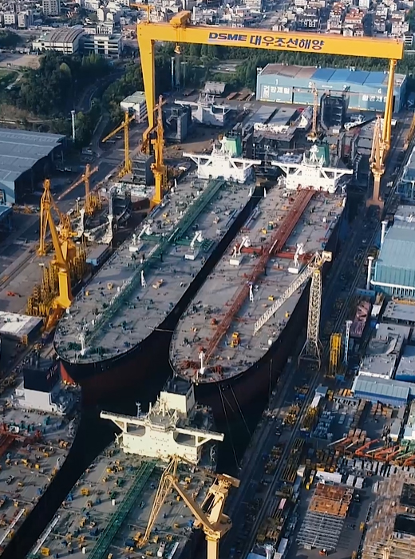
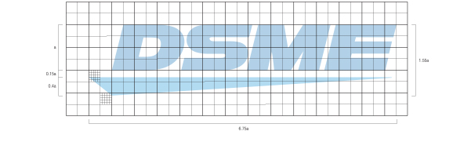

기업안내
사업개요
"세계 초일류" 조선해양 전문기업
뿌리깊은 조선역사를 지닌 유럽, 세계 경제의 거대한 축을 이루는 미주 등 세계 조선시장에서, 대우조선해양이 건조한 선박들이 ‘최고 품질의 배’로 각광 받고 있습니다.
대형 해양플랜트를 건조해 본 오일메이저들은 그 기술 수준과 납기준수, 고객의 요구를 최대한 만족시키기 위해 노력하는 대우조선해양 사람들의 성실한 땀방울에 크게 만족하며 단골고객이 되고 있습니다.
한반도 동남쪽 거제도 옥포만에서 기공하여 1981년에 준공한 대우조선해양은, 각종 선박과 해양플랜트, 시추선, 부유식 원유생산설비, 잠수함, 구축함 등을 건조하는 세계 초일류 조선해양전문기업입니다. 넓은 부지 위에 세계 최대 1백만톤급 도크와 900톤 골리앗 크레인 등의 최적 설비로 기술개발을 거듭해, 고기술 선박 건조에 탁월한 능력을 보유하고 있습니다. IT기술을 기반으로 체계화 된 선박건조기술과 고난도 해양플랫폼 건조능력, 대형 플랜트 프로젝트 관리능력, 전투잠수함과 구축함을 건조하는 높은 기술력을 고루 갖춰, 모든 종류의 조선 해양 제품을 최상의 품질로 만들어 냅니다.
독립기업으로 다시 태어난 대우조선해양은 '신뢰와 열정'을 기업문화의 핵심가치로 설정했습니다.
서로간존중과 배려를 통하여 동료와 조직간의 협력과 믿음을 쌓고, 정직한 행동과 약속 이행을 통해 고객과의 관계를 돈독히 하며, 투명경영으로 직원과 투자자와 회사간의 신뢰를 다지자는 것입니다. 하기로 한 일은 근성과 끈기로 끝까지 해내고, 주인 의식으로서 최선을 다하고 스스로 책임지며, 현실에 안주하지 않고 더 높은 가치를 향해 끊임없이 변화와 혁신을 추구하며 개인의 능력을 마음껏 발휘하여 자아성취를 이루자는 것을 의미합니다.
글로벌 네트워크
글로벌 네트워크
전략의 첨병
- 런던지사 Daewoo Shipbuilding & Marine Engineering Co., Ltd.. London Office, Unit C402, Westfield London Shopping Centre, Ariel Way, London W12 7FD, UK
- 그리스지사 Daewoo Shipbuilding & Marine Engineering Co., Ltd.. Greece Office, 1, Possidonos Ave., & 1 GOUMI 174 55 Alimos Greece
- 휴스턴지사 Daewoo Shipbuilding & Marine Engineering Co., Ltd.. Houston Office, 950 Threadneedle St., Suite 270, Houston, Texas 77079 U.S.A
- 동경지사 Daewoo Shipbuilding & Marine Engineering Co., Ltd.. Tokyo Office, 6F. Akebono Daitetsu Building Arakicho 23-15, Shinjuku-ku, Tokyo 160-0007 Japan
- 루안다지사 Daewoo Shipbuilding & Marine Engineering Co., Ltd.. Luanda Office, Rua Rainha Ginga No 187, Edificio Rainha Ginga, Piso Intermedio, Imgombota, Luanda Angola
CI
DSME를 대표하는 로고
조선해양 분야에서 세계제일의 초일류기업으로 도약하는 진취적 기업이념을 시각화한 것입니다. 상부의 DSME는 회사 영문명칭의 이니셜이며 회사의 이름을 직관적으로 알 수 있도록 도형이 아닌 전용 폰트로 도안하였습니다.
글자체는 경사지게 하여 미래를 향해 모티브하였으며 하단의 삼각형은 선박의 형태를 모티브하였으며 우측방향으로 가늘게 하여 '첨단기술'과 '미래지향'의 의미를 주었습니다. 상단부의 청색은 해양을 통해 세계로 도약하는 의지를 뜻하고 하단부의 밝은 청색은 미래와 기술을 담고 있습니다.